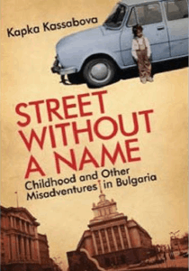

All the text analyses


From mid-century stoicism to post-communist reflection on lost innocence
This website serves as a digital companion to the book Political narratives in Bulgarian and South-Eastern European memoir literature, offering expanded analyses of Bulgarian memoirs.
The site provides in-depth analyses of two Bulgarian memoirs (The Truth that Killed by Georgi Markov and Street without a Name by Kapka Kassabova), offering more content than what appears in the printed book.
This resource is for academics, students, and anyone interested in South-Eastern European literature and memoir studies.
Reuse is allowed with appropriate attribution and in agreement with the CC-CC BY-NC-SA 4.0 International license.
This academic work, authored by Dr. Maya Padeshka (University of Sofia, Bulgaria) and Fabio Ashtar Telarico (University of Ljubljana, Slovenia), offers a significant contribution to the study of South-Eastern European memoir literature. It meticulously examines the genre's evolution and its cultural impact.
The book targets scholars, students of Slavic studies, and literary critics interested in post-communist narratives. It provides a framework for understanding the complexities and nuances within memoirs from this region.
Its significance lies in its focused analysis of underrepresented Bulgarian, Albanian, and Yugoslav memoirs, providing critical perspectives and contextual information that illuminate the personal and political histories captured within these powerful narratives.

Offline Website Builder